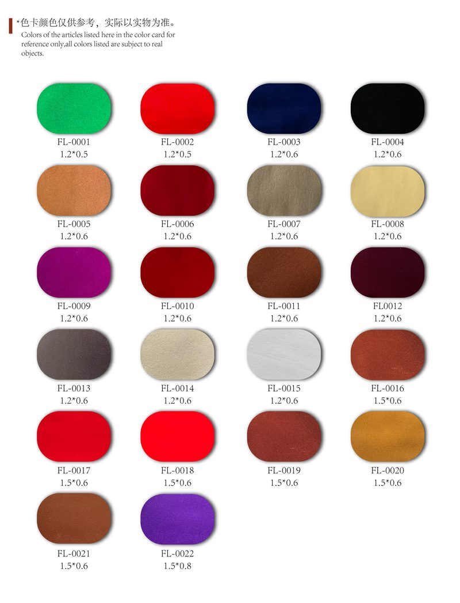

Flock Fibers
Nylon, viscose, polyester, and more — precision-cut for electrostatic flocking. We source to your denier, cut length, finish, and color, not a fixed spec sheet.

Flock fiber — precision-cut for electrostatic flocking
Sourced to Your Specification
- Materials — nylon, viscose, polyester
- Denier & cut length — matched to your target density and hand feel
- Finish — full dull, semi dull, and custom
- Color — any Pantone or sample match
Have a spec sheet? Send it over — if it's not in our current network, we'll source it.
Tell Us Your Spec — Get a QuoteSample Colors & Textures
Click to enlarge. These are samples from our sourcing network — we can match any color, denier, or texture you need.

JBN-1

JBN-2

JBN-3

JBN-4

MFN-1

MFN-2

MFN-3

TFN-1

TFN-2

TFN-3

TFN-4

Smooth Velvet

Italian Velvet

Leopard Print

Python Skin

Houndstooth

Polka Dot

Speckled

Diamond Grid

Cubic Diamond

Lychee Texture

Wood Grain

Fish Scale

Bamboo Leaf

Cloud Motif

Embossed Relief

Polyester Color Card